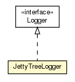

hu.sch.kfc.dev
Class JettyLauncher.JettyTreeLogger

java.lang.Object
 hu.sch.kfc.dev.JettyLauncher.JettyTreeLogger
hu.sch.kfc.dev.JettyLauncher.JettyTreeLogger
- All Implemented Interfaces:
- org.mortbay.log.Logger
- Enclosing class:
- JettyLauncher
public static class JettyLauncher.JettyTreeLogger
- extends java.lang.Object
- implements org.mortbay.log.Logger
An adapter for the Jetty logging system to GWT's TreeLogger. This implementation class is
only public to allow Log to instantiate it. The weird static data / default
construction setup is a game we play with Log's static initializer to prevent the
initial log message from going to stderr.
|
Method Summary |
void |
debug(java.lang.String msg,
java.lang.Object arg0,
java.lang.Object arg1)
|
void |
debug(java.lang.String msg,
java.lang.Throwable th)
|
org.mortbay.log.Logger |
getLogger(java.lang.String name)
|
void |
info(java.lang.String msg,
java.lang.Object arg0,
java.lang.Object arg1)
|
boolean |
isDebugEnabled()
|
void |
setDebugEnabled(boolean enabled)
|
void |
warn(java.lang.String msg,
java.lang.Object arg0,
java.lang.Object arg1)
|
void |
warn(java.lang.String msg,
java.lang.Throwable th)
|
| Methods inherited from class java.lang.Object |
clone, equals, finalize, getClass, hashCode, notify, notifyAll, toString, wait, wait, wait |
JettyLauncher.JettyTreeLogger
public JettyLauncher.JettyTreeLogger(com.google.gwt.core.ext.TreeLogger logger)
debug
public void debug(java.lang.String msg,
java.lang.Object arg0,
java.lang.Object arg1)
- Specified by:
debug in interface org.mortbay.log.Logger
debug
public void debug(java.lang.String msg,
java.lang.Throwable th)
- Specified by:
debug in interface org.mortbay.log.Logger
getLogger
public org.mortbay.log.Logger getLogger(java.lang.String name)
- Specified by:
getLogger in interface org.mortbay.log.Logger
info
public void info(java.lang.String msg,
java.lang.Object arg0,
java.lang.Object arg1)
- Specified by:
info in interface org.mortbay.log.Logger
isDebugEnabled
public boolean isDebugEnabled()
- Specified by:
isDebugEnabled in interface org.mortbay.log.Logger
setDebugEnabled
public void setDebugEnabled(boolean enabled)
- Specified by:
setDebugEnabled in interface org.mortbay.log.Logger
warn
public void warn(java.lang.String msg,
java.lang.Object arg0,
java.lang.Object arg1)
- Specified by:
warn in interface org.mortbay.log.Logger
warn
public void warn(java.lang.String msg,
java.lang.Throwable th)
- Specified by:
warn in interface org.mortbay.log.Logger
Copyright © 2011. All Rights Reserved.